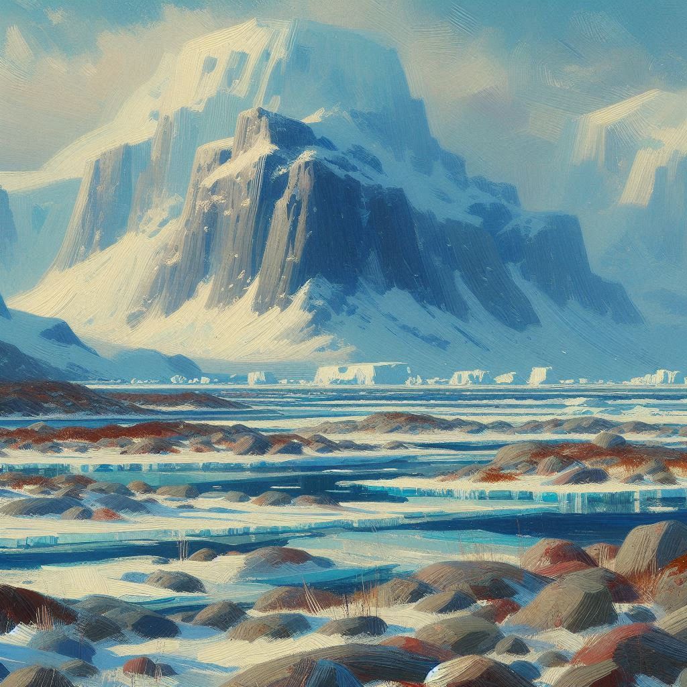
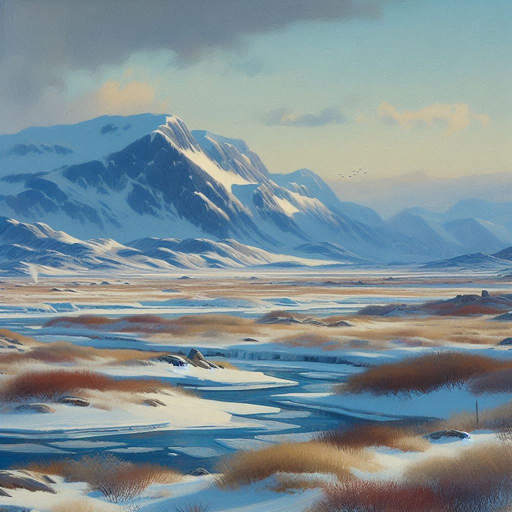

Welcome to the Azios Wiki


Welcome to Azios!
"The World of the Morning Star"
This is a wiki for a personal worldbuilding project.
"The World of the Morning Star"
This is a wiki for a personal worldbuilding project.
CC BY-NC-SA

Xibalba
Xibalba is a vast frozen wasteland in the far north of Azios. It is one of the most sparsely populated and least explored regions of the world. The largest settlement is a major mining operation known as Starfall which has been processing an ancient meteorite rich in metals.

Climate
The farthest northern parts of Xibalba are far enough North to experience the midnight sun and long night. The more southerly parts have drastic changes in daylight between the winter and summer even if they do not experience full 24hour darkness. However, because of its already far northerly location, this does not effect average temperatures drastically.
The temperature rarely gets above freezing aside from the late summer and agriculture is impossible. The summers are very dry with little to no snow, sleet, hail, or even cloud cover. Winters can be dry or snowy depending on the year.
The temperature rarely gets above freezing aside from the late summer and agriculture is impossible. The summers are very dry with little to no snow, sleet, hail, or even cloud cover. Winters can be dry or snowy depending on the year.

Settlements
There are thought to be perhaps hundreds of small, nomadic peoples who subsist on hunting and whaling along the coasts. There are very few permanent settlements known and the only major one is the Starfall Mining Operation. Few scholars have access to first hand reports of people from most areas of Xixalba, with even fewer having visiting themselves.Many of the inhabitants are from Yartzland and they are transitory workers. They spend most of their time in Xixbalba at the mining operation, before returning.
Order is kept by the Yart Mining Company's administration who manage not only the mine but all civil and legal disputes. Very little contact with the central government in Yarril is ever made and Starfall is largely independent.
Rumors
There are reports of ice hermits who live amongst the crags and fjords and glaciers of the farthest northern reaches. It is unknown what parts of these rumors are true, what parts are exaggerations, and which parts are misunderstandings of the nomadic peoples who are reported to live that far north.
Original File: Xibalba.md